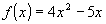
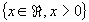

Item 08: O conjunto imagem da função real

é
.Observe que o símbolo "x" está sendo utilizado para representar a variável independente, ou seja, aquela cujos valores não depende de nenhuma outra relação, logo ela representa elementos do domínio; em outra linguagem, as imagens são os valores de f(x).
Conclusão: O item 08 é falso.
 Voltar
Voltar